Munkalap a telefonodon: kitöltöd, aláíratod a megrendelővel, és már küldöd is PDF-ben.
Ha szolgáltatást nyújtasz (villanyszerelő, vízszerelő, burkoló, festő, kertész, szerelő, karbantartó, takarító vagy bármilyen más szakember), a munka elkezdése előtt érdemes leírni, mit, mennyiért végzel el, és ezt a megrendelővel alá is íratni. Ez megóv a későbbi vitáktól: a megrendelő is tudja, mire számítson, te pedig tudsz mire hivatkozni.
A Munkalap alkalmazással ezt pár perc alatt, a telefonodon megteheted. Nincs papír, nincs külön program, és nem kell hozzá számítógép.
Az alkalmazást telefonra találtuk ki. Számítógépen megnyitva egy QR-kódot mutat, amit a telefonoddal beolvasva megnyithatod.
Az alkalmazást nem az áruházból kell letölteni: egyszerűen megnyitod a weboldalát, és felteszed a főképernyőre, onnan úgy indul, mint bármelyik másik app.
Olvasd be a telefonod kamerájával a QR-kódot, vagy írd be a böngészőbe:
Az első indításkor a Kezdőlapra kerülsz. Innen nyílik minden: Új munkalap, Mentett munkalapok és Beállítások. Ha van megkezdett munkalapod, azt egy külön gombbal folytathatod.
Mielőtt az első munkalapot kitöltenéd, nyisd meg a Beállításokat, és add meg a saját adataidat:
Ezeket csak egyszer kell megadnod, minden munkalapra automatikusan rákerülnek. Ha végeztél, koppints a Mentés és vissza gombra.
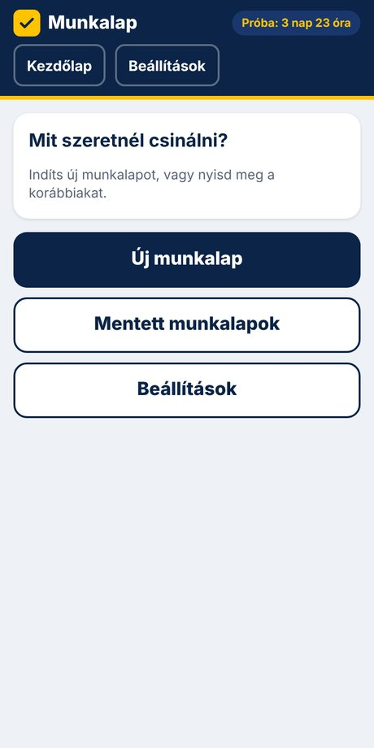
Beállítások képernyő: itt adhatod meg a saját adataidat, ezek kerülnek a munkalap „Vállalkozó” rovatába.
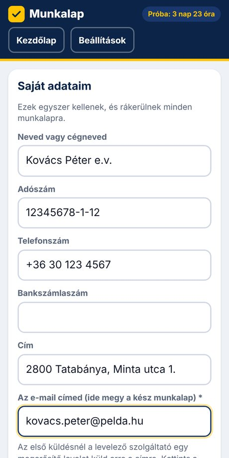
A Kezdőlapon koppints az Új munkalap gombra. Az űrlap öt részből áll, fentről lefelé haladva töltsd ki.
Írd be a megrendelő nevét (ez kötelező), a címét, a telefonszámát és az e-mail címét. Alatta rövid szöveggel írd le a munkát, például: fürdőszobai csaptelep cseréje, 2 db konnektor áthelyezése. A dátum alapból a mai nap.
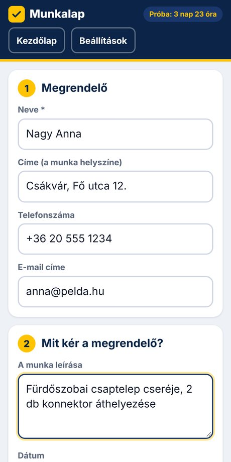
Minden tételhez add meg a megnevezést, a mennyiséget, az egységet (db, óra, m², fm stb.) és az egységárat. Az alkalmazás kiszámolja a tétel árát és az összeget.
A + Tétel gombbal újabb sort adhatsz hozzá. A + Pótmunka gombbal olyan munkát vehetsz fel, ami menet közben merült fel: ezt külön jelöli, így a végén is látszik, mi volt az alapmunka és mi a pótmunka. A felesleges sort a Törlés gombbal veheted ki.
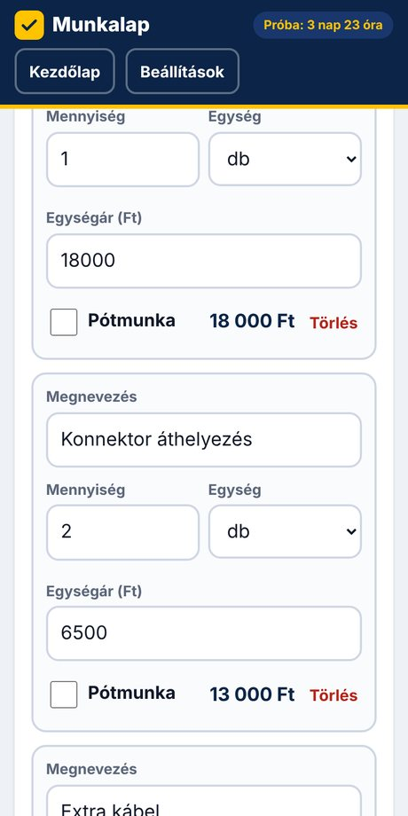
A tételek alatt mindig látod az alapmunka, a pótmunka és a végösszeg értékét. Ha az árakat a megrendelővel szóban egyeztetted, itt ellenőrizhetitek együtt.
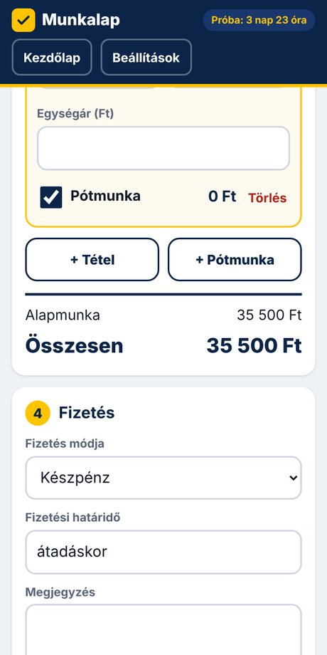
Válaszd ki a fizetés módját (készpénz, átutalás, bankkártya vagy egyéb), írd be a fizetési határidőt (például átadáskor), és ha van, egy megjegyzést.
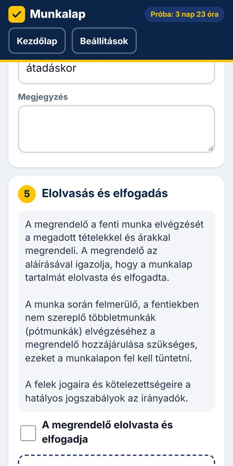
Add oda a telefont a megrendelőnek. Elolvashatja a rövid nyilatkozatot (hogy elfogadja a tételeket és az árakat, és hogy a pótmunkához a hozzájárulása szükséges), bejelöli, hogy elolvasta és elfogadja, majd ujjal aláírja a képernyőn.
Ha az aláírás nem sikerült, az Aláírás törlése gombbal újrakezdheti.
Végül koppints a Munkalap lezárása gombra.
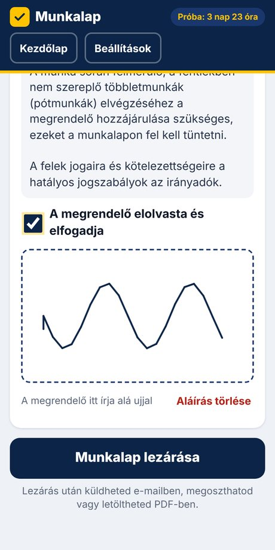
A lezárás után a munkalap azonnal elmentődik, és a következő lehetőségeid vannak:
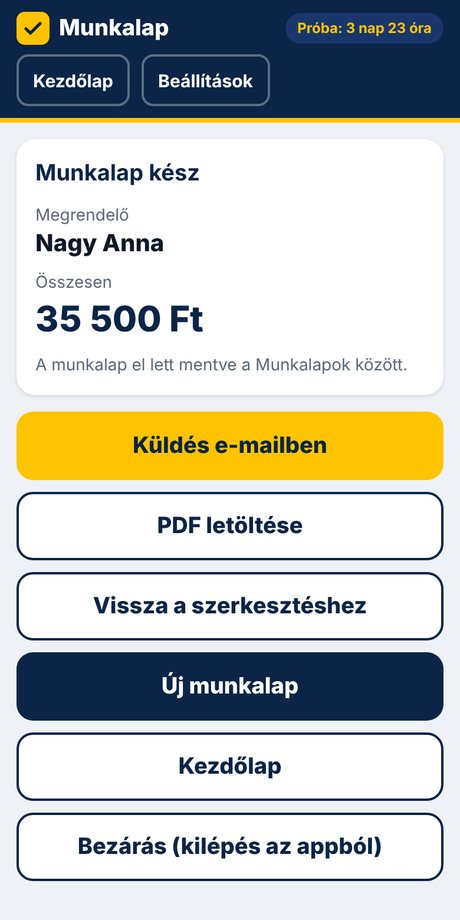
Így néz ki a kész munkalap PDF-ben (ezt küldheted el a megrendelőnek):
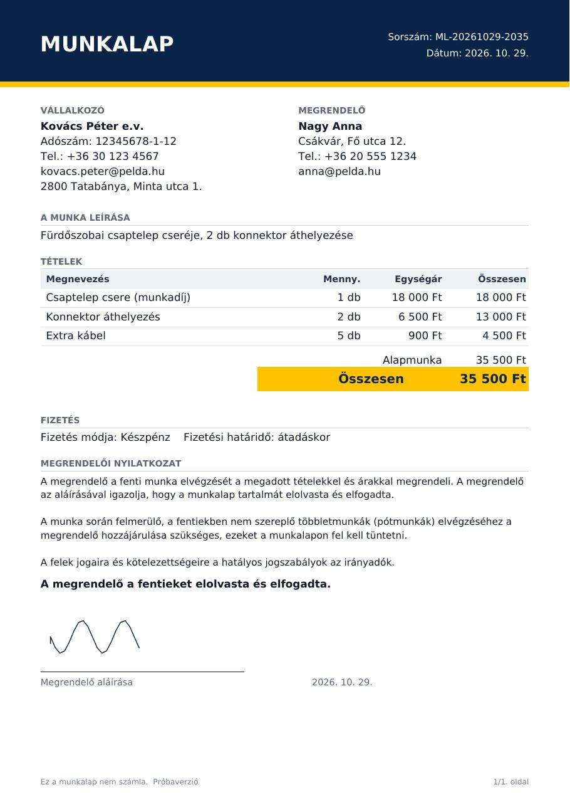
Minden lezárt munkalap a Mentett munkalapok között marad, amíg te nem törlöd. Egy koppintással megnyithatod, és onnan újra elküldheted vagy letöltheted a PDF-et, vagy törölheted, ha már nincs rá szükséged.
A listában látod a megrendelő nevét, a dátumot és az összeget, így könnyen megtalálod a keresett munkalapot.
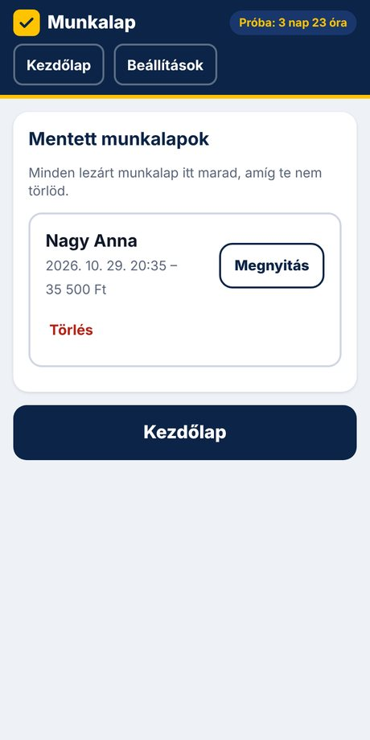
Az adataid csak a te telefonodon vannak, nem kerülnek fel sehova. Ez a biztonságod miatt jó, de azt is jelenti, hogy ha a telefon elromlik, elvész vagy lecseréled, az adatok nélküle nem állíthatók vissza.
Ezért érdemes rendszeresen biztonsági mentést készíteni:
Telefoncsere vagy törlés után telepítsd újra az alkalmazást, és a Visszaállítás fájlból gombbal töltsd vissza a mentést. A munkalapjaid, a beállításaid, a licenced és a próbaidőd is visszajön.
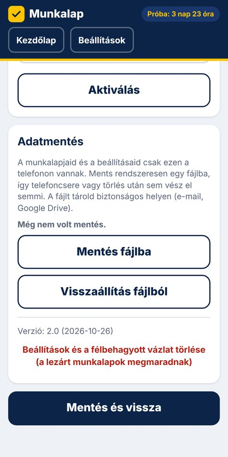
Az első megnyitástól számítva 4 napig mindent kipróbálhatsz, korlátozás nélkül. A képernyő tetején látod, mennyi van még hátra. A próbához sem regisztráció, sem bankkártya nem kell.
Az alkalmazás ára 3 990 Ft, egyszeri díj (ÁFA-t nem tartalmaz). Kétféleképpen fizethetsz:
A fizetés beérkezése után az aktiváló kódot e-mailben küldöm, általában pár órán belül, de legkésőbb 2 munkanapon belül. A levélben két lehetőséged van:
Az aktiválás után a próbaidő jelzés eltűnik, és az alkalmazást korlátlan ideig használhatod.
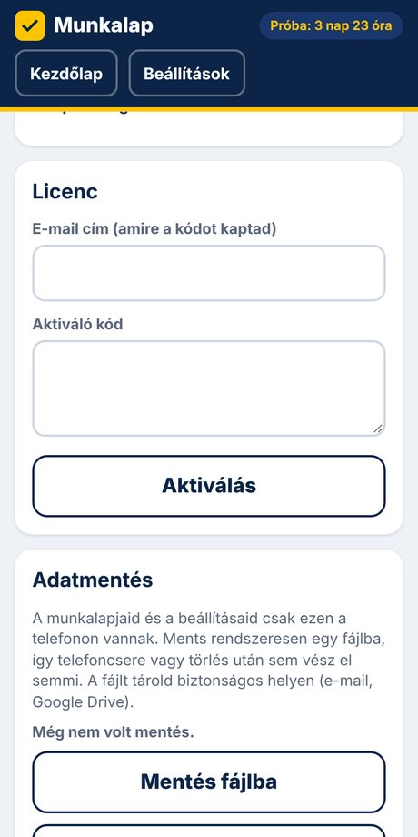
Ha nem aktiválod a licencet, az alkalmazás zárolódik: új munkalapot nem tudsz készíteni. A korábbi adataid nem vesznek el, az aktiválás után minden újra elérhető.
A telepítéshez és a PDF elküldéséhez igen. A munkalapok kitöltéséhez, aláírásához és mentéséhez nem, ezt bárhol megteheted, akár térerő nélküli helyszínen is.
Nem. A 3 990 Ft egyszeri díj, nincs előfizetés és nincs rejtett költség.
A licenc egy vállalkozóhoz tartozik. Ha lecseréled a telefonodat, a mentésből visszaállíthatod a régi adataidat az újon is. Egy másik személy számára külön licenc szükséges.
Ha készítettél biztonsági mentést (8. fejezet), az új telefonon visszaállíthatod. Mentés nélkül az adatok nem állíthatók vissza, mert csak a telefonodon vannak. Ha az aktiváló kódod elveszett, írj nekem, és újra elküldöm.
A munkalap a megrendelővel való megállapodásod egyszerű írásos rögzítése, a szolgáltatás és az árak egyértelmű dokumentálására való. Ez nem számla, és nem jogi tanácsadás.
Az alkalmazás egy telepíthető webalkalmazás, ezért nem kell az áruházból letölteni. A weboldalról közvetlenül a főképernyőre teszed, így mindig a legfrissebb változatot kapod.
Zárd be, és indítsd a főképernyőn lévő Munkalap ikonról. Ha ott nincs, végezd el újra a telepítést a 3. fejezet szerint.
Igen, a javítások és az újdonságok internetkapcsolat esetén a következő indításkor maguktól megjelennek, az adataid megmaradnak.
Ha elakadsz, kérdésed van, vagy elveszett az aktiváló kódod, írj nekem e-mailben:
Az e-mailes támogatás a vásárlástól számított 12 hónapig jár. Általában pár órán belül, de legkésőbb 2 munkanapon belül válaszolok.
Az ÁSZF, adatkezelési tájékoztató és impresszum itt olvasható.
Horváth Balázs